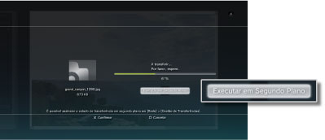
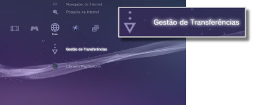

Rede > Transferência em segundo plano
Transferência em segundo plano
A transferência de fundos é uma funcionalidade que o permite realizar outras operações enquanto transfere vários itens de dados ou dados com um tamanho de ficheiro grande. Esta funcionalidade está disponível apenas quando aparece [Executar em Segundo Plano] no ecrã que é apresentado durante a transferência.

Notas
- Poderá não ser possível efectuar a transferência em segundo plano dependendo do tipo de dados ou do número de dados a transferir.
- Pode ser necessária a instalação para utilizar dados transferidos, tal como jogos ou ficheiros de vídeo. Quando a transferência estiver concluída, os dados que precisem de ser instalados serão apresentados como
 ou em cada categoria.
ou em cada categoria. - A transferência em segundo plano poderá não estar disponível quando existem dados não instalados no disco rígido.
- Se o sistema PS3™ for desligado durante uma transferência em segundo plano, o estado da transferência será guardado. A transferência será retomada automaticamente quando o sistema PS3™ for ligado e for estabelecida uma ligação à Internet.
- Uma transferência em segundo plano será interrompida temporariamente quando se realizar alguma das seguintes operações. A transferência será reiniciada automaticamente quando a operação for concluída.
- - Quando reproduzir um Blu-ray Disc ou um DVD
- - Quando utilizar funcionalidades de rede de jogos online *
- - Quando iniciar software do formato PlayStation®2
- - Quando iniciar
 (Folding@home™)
(Folding@home™) - - Quando realizar conversações de voz/vídeo
- - Quando realizar uma actualização do sistema
- - Quando ajustar itens de definição em
 (Definições)
(Definições)
*
Quando um jogo estiver prestes a terminar, a transferência em segundo plano será interrompida temporariamente.
Atenção
- Algum software do formato PlayStation®2 ou PlayStation® poderá ter um comportamento no sistema PS3™ diferente que nos sistemas PlayStation®2 ou PlayStation® ou pode não funcionar correctamente no sistema PS3™.
- Além disso, alguns sistemas PS3™ não reproduzem software de formato PlayStation®2. Para obter mais informações, consulte [Tipos de discos reproduzíveis], visite o Web site da SCE da sua região ou consulte a documentação incluída no seu sistema PS3™.
Gestão de Transferências
Esta opção é apresentada apenas quando está a ser efectuada uma transferência em segundo plano. Pode verificar o estado da transferência ou cancelar a transferência dos dados em  (Navegador de Internet) ou
(Navegador de Internet) ou  (PlayStation®Store). Seleccione
(PlayStation®Store). Seleccione  (Gestão de Transferências) em
(Gestão de Transferências) em  (Rede).
(Rede).

Verificar o estado da transferência
Seleccione o ícone dos dados cujo estado de transferência pretende verificar, prima o botão  e, em seguida, seleccione [Estado] no menu de opções.
e, em seguida, seleccione [Estado] no menu de opções.
Cancelar a transferência
Seleccione o ícone dos dados cuja transferência pretende cancelar, prima o botão e, em seguida, seleccione [Cancelar] no menu de opções. Após a transferência ter sido cancelada, será eliminada de (Gestão de Transferências).
Pausar / resumir transferências
Seleccione o ícone dos dados cuja transferência pretende pausar, prima o botão e, em seguida, seleccione [Pausa] no menu de opções. Para continuar a transferência, prima de novo o botão e, em seguida, seleccione [Continuar] no menu de opções.
Notas
- Se pausar a transferência,
 será apresentado com o ícone.
será apresentado com o ícone. - Se pausar uma transferência quando estiver a transferir vários itens, o item de dados seguinte começará a ser transferido de imediato.
Pausar todas as transferências
Seleccione o ícone de uma transferência, prima o botão e, em seguida, seleccione [Pausar tudo] no menu de opções.
Continuar todas as transferências
Seleccione o ícone de uma transferência, prima o botão e, em seguida, seleccione [Continuar tudo] no menu de opções.